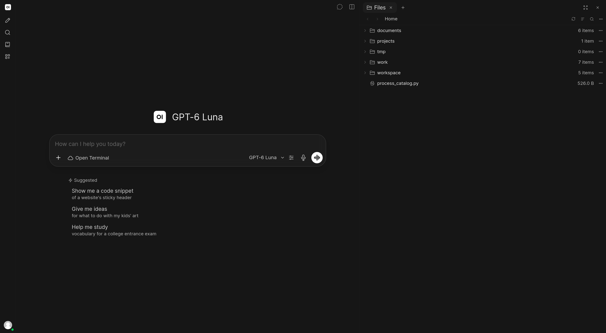

HELLO, HUMAN / LETTER 06
코드를 만든 뒤에
남는 일
에이전트가 일을 마쳤다고 하면, 무엇을 확인하시나요?
작업 지시와 코드 검토, AI 도입 후 달라진 업무를 함께 돌아봅니다.
안녕하세요, 헬로우 휴먼 멤버 여러분. 여섯 번째 편지입니다.
에이전트가 코드를 고치고 “테스트를 통과했습니다”라고 알려옵니다. 반가운 소식이지만, 변경 내용을 검토하다 보면 몇 가지가 더 궁금해집니다. 오류가 나는 상황도 시험했는지, 검사한 뒤 코드를 다시 바꾸지는 않았는지, 다른 변경과 합쳐도 잘 돌아가는지 말입니다.
이번 주에는 맡길 일과 완료 기준을 정하는 개발 가이드를 먼저 읽어보세요. 코드와 검사 결과를 함께 검토하는 법을 익힌 뒤, AI를 도입하고 실제로 일이 얼마나 줄었는지 생각해볼 글도 골랐습니다.
11월 3일부터 9일까지 새로 올라온 글은 일반뉴스 7편, 단신 2편, 가이드 1편입니다. 문자로 장을 보는 Alexa와 소리 없이 글을 입력하는 Subvocal, 하드웨어 설계 실험도 만나보세요.
어디서 시작할지 고민이라면
먼저 읽기 좋은 3편
완료 조건을 넣기
쿠폰 표시를 고치는 작은 작업부터 맡길 일과 변경 범위, 기대하는 결과를 정합니다. 지시문과 완료 보고 양식을 다음 작업에 맞게 바꿔 써보세요.
에이전트 개발 가이드 → 변경을 검토할 때 · 이 통과 기록은어느 코드의 것일까
OpenAI의 Pierre 인수 계획과 보안 연구에서 코드 변경과 검사 결과를 함께 남겨야 하는 이유를 짚습니다. 지금 검토하는 코드의 통과 기록인지 확인하는 실험도 담았습니다.
코드 검토와 저장 소식 → 도입 효과를 볼 때 · 검토와 수정까지줄었을까
AI를 쓰는 기업은 늘었지만 경제 전체의 생산성 개선 증거는 아직 제한적이라는 RBA의 분석입니다. 우리 팀에서도 초안을 만든 뒤에 남는 일을 함께 살펴볼 수 있습니다.
RBA의 생산성 분석 →AI가이드 · 1편
작은 기능 하나를 끝까지 맡겨보기
목표와 변경 범위를 정하고, 결과를 확인한 뒤 다음 작업에 쓸 규칙을 남깁니다.
에이전트와 함께 개발하는 실용 가이드 →
쿠폰을 쓸 수 없는 이유를 보여주는 가상 화면에서 정상 응답, 조회 실패, 늦게 도착한 응답을 시험하는 방법을 설명합니다. 작업을 병렬로 나누고, 배운 내용을 팀의 규칙으로 남겨 다시 쓰는 방법까지 담았습니다.
조회 실패는 쿠폰을 쓸 수 없다는 뜻이 아닙니다. 이 차이를 화면에서 어떻게 보여줄지 생각해보세요. 예시를 적용할 때는 실제 서비스의 정책과 API 계약을 먼저 확인해야 합니다.
AI뉴스 · 7편
일상 과제부터 설계와 보안까지
새로 공개된 기능과 평가 결과를 일곱 편에 담았습니다. 실제로 쓸 수 있는 범위와 아직 검증이 필요한 부분을 함께 읽어보세요.

RBA, 빠른 AI 도입에도 생산성 효과는 아직 불확실 →
RBA의 분석을 바탕으로 기업들이 체감한 개선과 경제 전체의 생산성을 구분해 읽습니다. llama.cpp가 도구 호출의 문자 처리 오류를 고친 소식, Anthropic의 발전설비 확보 보도와 함께 AI를 업무에 쓰는 데 필요한 조건을 짚습니다.
V-Thinker, 이미지 조작까지 평가한다 →
11월 7일자 학습·평가 자료 공개 안내를 바탕으로 V-Thinker가 위치 찾기, 이미지 조작, 답의 정확성을 어떻게 나눠 평가하는지 설명합니다. 환경단체의 이미지·문서 분석 사례와 상품 이미지에서 읽은 값·위치를 함께 남기는 실험도 소개합니다.
Amazon Alexa, 문자로 찾고 구매한다 →
미국 일부 초대 고객에게 열린 Alexa의 문자 쇼핑과 CrewAI의 실험적 대화 세션을 소개합니다. 문자와 웹을 오가는 요청을 다루는 실험 제안에 더해, OpenHands의 자동화 흐름도와 Clutch의 신원 관리 소식도 담았습니다.
GPT-6 Cyber, 보안 성능과 작업 범위 준수를 함께 평가하다 →
OpenAI는 취약점을 찾아 재현하는 능력과 허가된 범위를 지키는 능력을 따로 평가했습니다. METR의 연구개발 평가, Box의 문서 검색·업무 절차 생성 계획, Claude의 실행 전 검사와 읽기 전용 금융 연결도 정리했습니다.
OpenAI의 Pierre 인수 계획, 코드 검토에서 저장까지 →
Codex에 이미 적용된 코드 탐색·비교 도구와 인수 후 통합할 계획인 저장소 기능을 구분해 소개합니다. Conductor Cloud의 종료 일정과 Linux 커널 보안 연구, Tencent Hy4·CodeQL의 변경점도 한자리에서 읽을 수 있습니다.
OpenAI의 하드웨어 실험, 설계에서 시제품까지 →
OpenAI의 실험에서 기구·회로·소프트웨어 설계가 어떻게 시제품으로 이어졌고, 제조를 위해 어떤 검토가 필요했는지 살펴봅니다. Open WebUI 0.13의 작업공간, JetBrains Air의 Copilot 연결, 바이두 Apollo World의 가상 주행 검증도 담았습니다.
OpenAI LifeVal, 일상에서 맡길 일을 평가하다 →
OpenAI가 사람들이 도움받고 싶은 돌봄·쇼핑·서류 준비 등을 평가 과제로 삼았습니다. 점수를 실제 업무 완료율로 읽지 않도록 평가 범위를 짚고, 금융 에이전트의 위임 논의와 GitHub의 실행 정책도 정리했습니다.
Pierre 인수는 아직 종결 조건이 남은 계획입니다. RBA의 분석은 경제 전체를 다루므로 특정 개발팀의 도입 효과는 별도로 확인해야 합니다. OpenAI 발표 ↗ · RBA 연설 ↗
속보·단신 · 2편
침입 경로와 새로운 입력 방식
바이낸스의 초기 사고 보고와 Subvocal의 사전예약 소식입니다. 공개된 내용과 아직 알 수 없는 부분을 나눠 정리했습니다.
바이낸스 탈취 사고, 가짜 면접과 사내 AI 도구 악용 →
바이낸스의 초기 조사 보고를 따라, 가짜 채용 과제에서 사내 시스템 침입과 권한 탈취로 이어진 과정을 8단계로 정리했습니다. AI 도구의 이름과 구체적인 악용 방식은 공개되지 않아 특정 모델의 결함으로 단정할 수 없습니다.
Subvocal, 소리 없이 글 쓰는 안경 사전예약 →
소리를 내지 않고 단어를 발음하면, 그 움직임을 전파로 감지해 글자로 바꾸는 안경입니다. 사전예약 단계의 제품 설명과 시연을 바탕으로, 잘못 입력된 글자를 고치는 수고와 지원 언어·데이터 처리 조건을 짚습니다.
다음에 일을 맡길 때는 “잘 동작하게 해주세요” 옆에 기대하는 결과를 한 줄 더 적어보세요. 정상 요청뿐 아니라 실패한 요청에 어떻게 응답해야 하는지도 정해두면 검토할 기준이 분명해집니다.
직접 해보며 설명이 모자랐던 곳이나 놓친 검사를 발견했다면 모임에서 나눠주세요. 다음 작업에 쓸 지시문과 확인 기준으로 함께 남겨보겠습니다.
다음 화요일에 또 뵙겠습니다.
헬로우 휴먼 드림